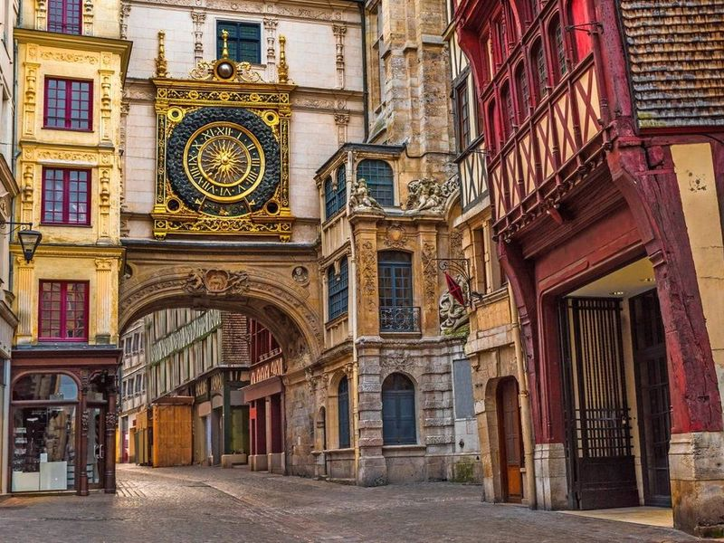
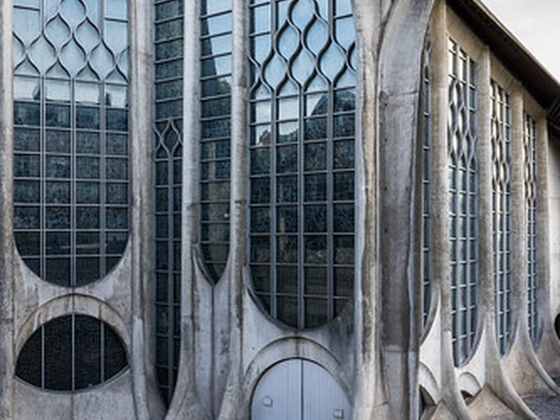
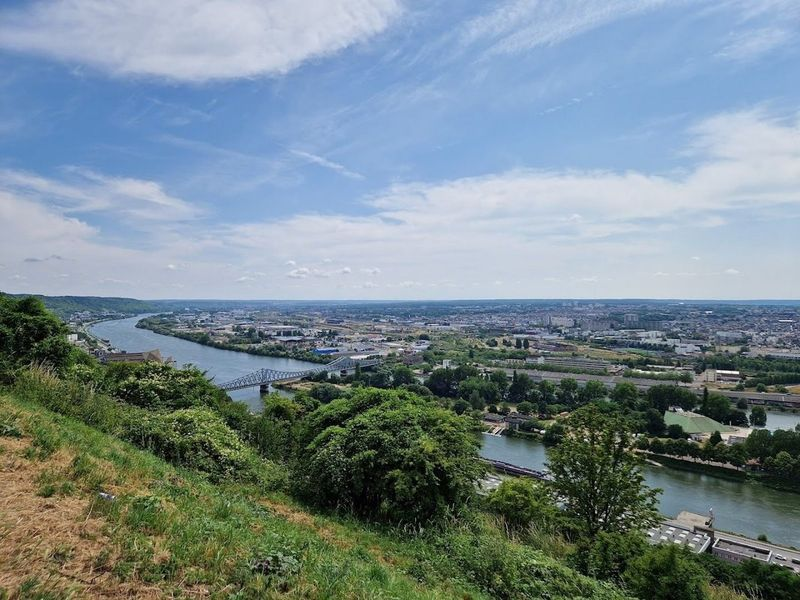
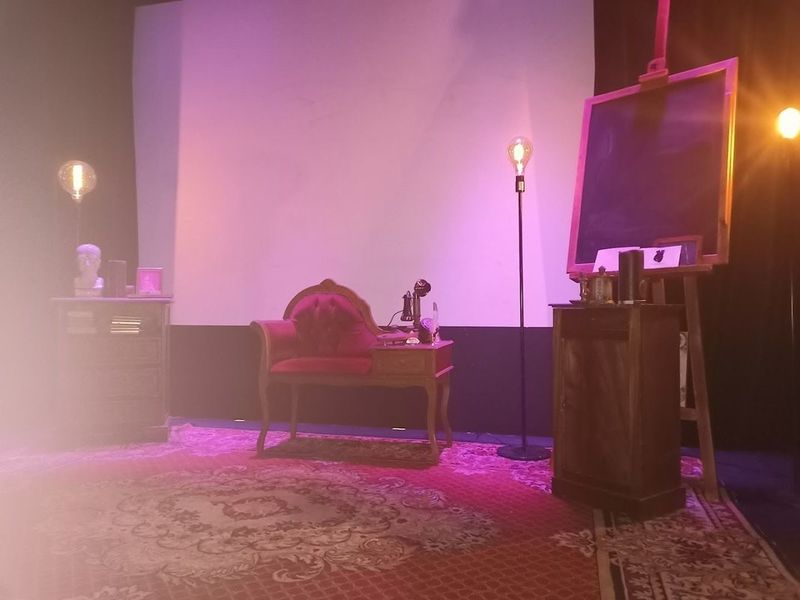
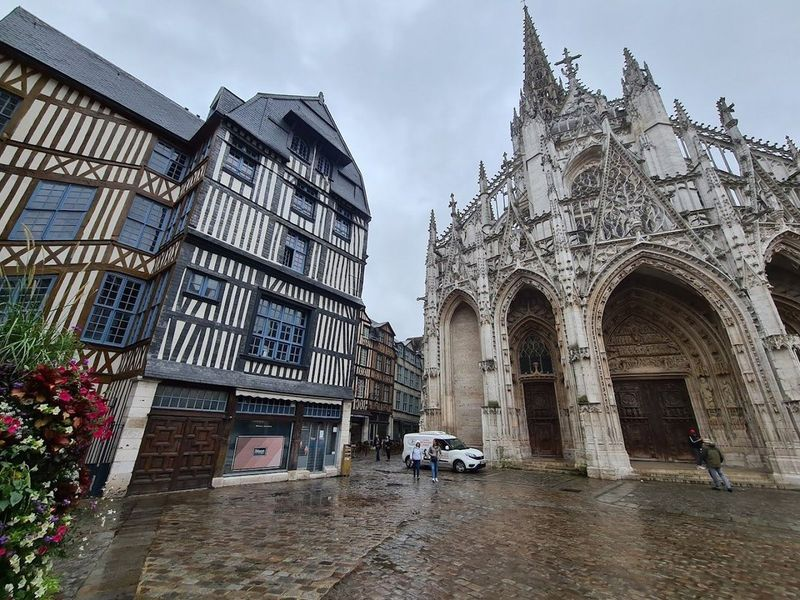
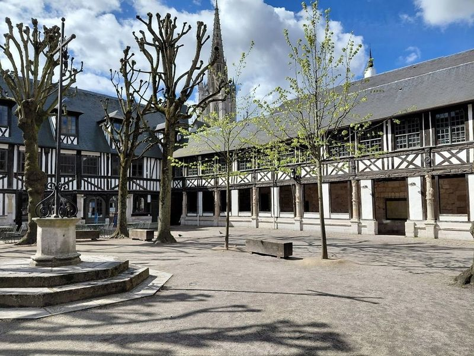
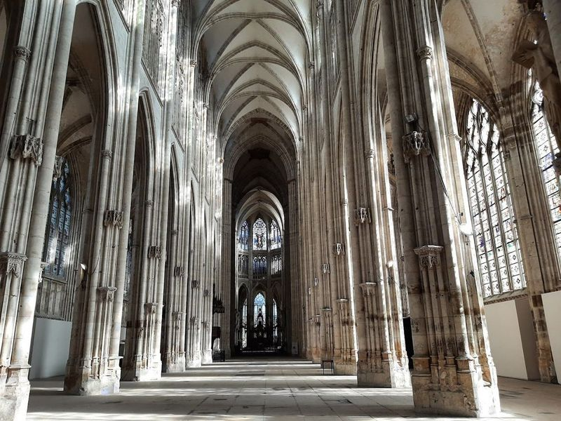
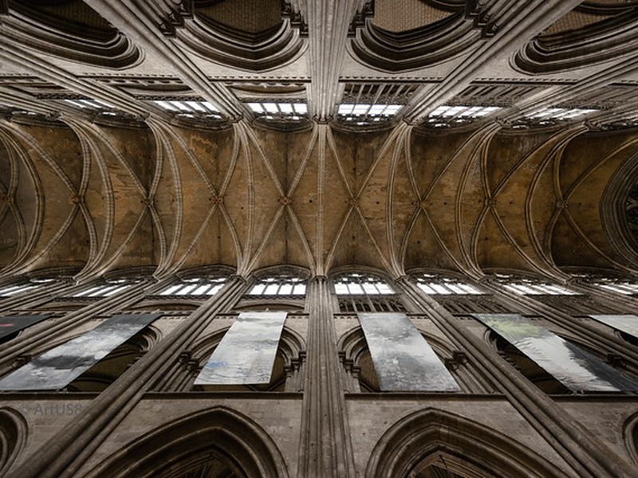
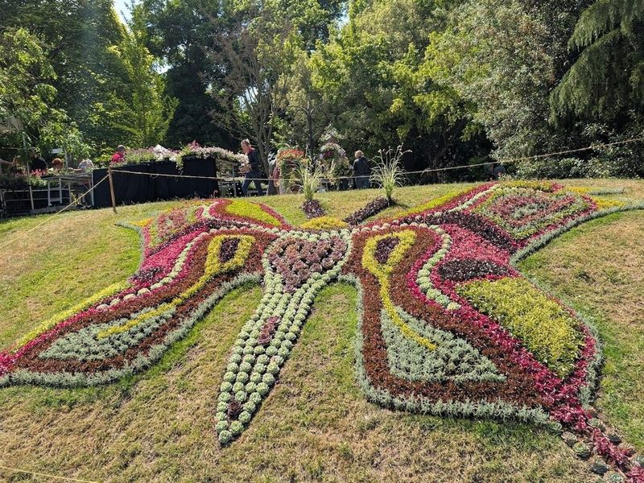
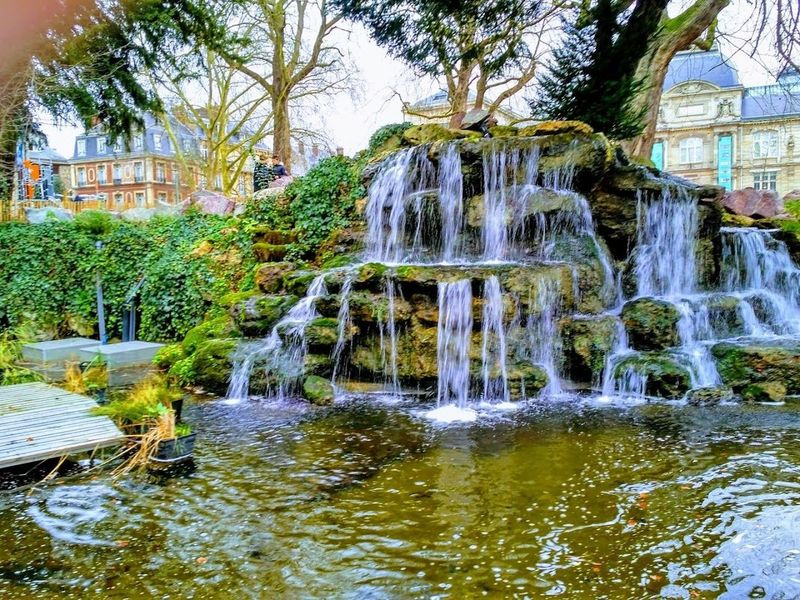

Explore Rouen
A Brief History
Rouen was a major Norman city whose archbishop wielded power across medieval Normandy and whose market squares hosted Joan of Arc's trial in 1431. Timber-framed streets and Gothic churches record cloth-trade wealth and wartime bombing that damaged but did not erase the old centre. Claude Monet painted the cathedral façade repeatedly, fixing Rouen's image in 19th-century art while the port linked the Seine to Atlantic trade.
Attractions Map
Top Sights & Activities

Le Gros-Horloge
Located in the picturesque city of Rouen, Le Gros-Horloge is a 14th-century astronomical clock housed within a Renaissance arch. This monument stands as a symbol of the city and has been an integral part of its skyline for centuries. The Gothic belfry tower that crowns the arch holds one of Europe's oldest clock mechanisms, which operated continuously from the 14th century until 1928.

place du Vieux-Marché
Place du Vieux-Marché is a broad square on the site of Rouen's medieval market and the 1431 trial of Joan of Arc. A modern church dedicated to the saint marks the location of her execution. Surrounding half-timbered houses and restaurants occupy rebuilt blocks along the pedestrianised centre of the Norman capital.

Rouen Panorama De La Côte Sainte Catherine
Rouen Panorama De La Côte Sainte Catherine, also known as Sainte-Catherine Hill, offers views of Rouen and the Seine River. Located 2 km from the historic center, it's to drive there due to its distance and a pedestrian path with over 500 steps. The hill, at an altitude of 140 meters, is perfect for watching sunsets or enjoying a picnic.

Theatre in the West
The Théâtre des Arts on the Place du Théâtre is the home of the Rouen Normandy Opera and a major performing-arts venue in the city centre. The building hosts opera, ballet, and concerts in a district rebuilt after wartime bombing. Its facade and foyer face the square near the Jeanne-d'Arc metro station.

Eglise Saint-Maclou
St. Maclou Catholic Church is a flamboyant Gothic church located in Rouen, France. It features ornate and graceful architecture with curved fronts, many arches, and sculpted wooden doors from the Renaissance period. Situated behind Cathedrale Notre-Dame on a small square filled with half-timbered houses, it forms part of the city's eye-catching scenery.

Aitre Saint Maclou
Aitre Saint-Maclou is a captivating historical site nestled in the heart of Rouen, renowned for its intriguing past as a plague cemetery dating back to the 14th century. This remarkable complex features hauntingly beautiful carvings that depict macabre themes and houses an ossuary added in the 16th century. Today, it serves as a vibrant cultural hub with the Fire Arts Gallery showcasing exquisite artisanal crafts made from clay, glass, and metal.

Saint-Ouen Abbey Church
Saint-Ouen Abbey Church, also known as Abbatiale Saint-Ouen, is a example of Gothic architecture located in Rouen. This ancient church was part of a Benedictine monastery and took over two centuries to complete. It features an impressive lantern tower, numerous pinnacles, and picturesque gardens. The church houses a grand pipe organ and many original stained-glass windows.

Cathédrale Notre-Dame de Rouen
Rouen Cathedral is a Gothic church whose west façade Claude Monet painted in a famous series. Construction spanned the 12th to 16th centuries with a cast-iron spire added in the 19th century. The nave, transept, and chapels hold tombs of Norman dukes and later French rulers.

Jardin des Plantes de Rouen
Jardin des Plantes de Rouen is a botanical garden in the south of Rouen, dating back to the 18th century. It offers a diverse collection of plants from five continents, including exotic species and medicinal plants. The garden features themed sections such as a rose garden, rock garden, and tropical plant greenhouses. Visitors can also enjoy a boating lake and honey-producing beehives on-site.

Square Verdrel
Square Verdrel is a charming park located in Rouen, featuring a landscaped plaza with shady trees, play equipment for children, and a picturesque duck pond with an ornamental waterfall. It offers a tranquil atmosphere and serves as an ideal spot to relax and enjoy the outdoors. The park is conveniently situated near the train station and is in close proximity to various museums and historic sites.